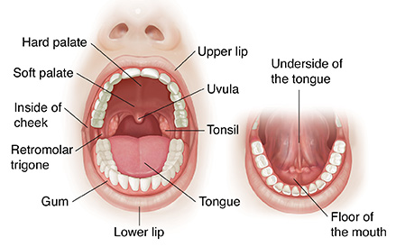
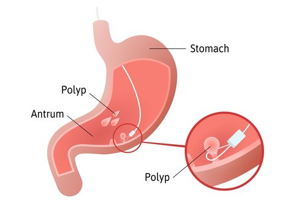

The digestive system involves several organs working together to break down food into smaller molecules that can be absorbed by the body. These organs include the salivary glands, mouth, pharynx, esophagus, stomach, small intestine, liver, gallbladder, pancreas, and large intestine. Each organ plays a specific role in the process of digestion, with the small intestine being the site of most nutrient absorption, and the large intestine being responsible for absorbing water and electrolytes from waste products. Overall, the digestive system ensures that the body receives the nutrients it needs from food and eliminates waste products efficiently.
The salivary glands are located in the mouth and produce saliva, which is a mixture of water, mucus, and enzymes. The enzymes in saliva, such as amylase, help to break down carbohydrates in food, while the mucus helps to lubricate food, making it easier to swallow. There are three pairs of major salivary glands: the parotid, submandibular, and sublingual glands. These glands are controlled by the autonomic nervous system and produce more or less saliva depending on the type of food and the body's needs.
acinar cells
Cells that produce and secrete the primary substance that the gland produces, such as digestive enzymes in the pancreas.
ductal cells
Cells that transport the primary fluid produced by acinar cells to the site where it will be released, modifying it by adding or removing ions and water
The mouth is where digestion begins. The teeth and tongue work together to break food into smaller pieces, which are then mixed with saliva to form a bolus. The tongue helps to push the bolus toward the back of the mouth, where it can be swallowed. The mouth also contains taste buds, which help to detect the flavors in food.
The palate is the roof of the oral cavity. It separates the oral cavity from the nasal cavity . The anterior portion, the hard palate , is supported by bone . The posterior portion, the soft palate, is skeletal muscle and connective tissue. Posteriorly, the soft palate ends in a projection called theuvula . During swallowing, the soft palate and uvula move upward to direct food away from the nasal cavity and into the oropharynx.
The tongue manipulates food in the mouth and is used in speech. The surface is covered with papillae that provide friction and contain the taste buds.
The uppermost part of the pharynx, located behind the nose and above the soft palate; lined with ciliated epithelium and contains the openings of the Eustachian tubes; houses the pharyngeal tonsils.
The middle part of the pharynx, located behind the mouth and extending from the soft palate to the hyoid bone; contains the base of the tongue, the palatine tonsils, and the tonsillar fossae.
the lowermost part of the pharynx, also known as the laryngopharynx, located behind the larynx (voice box) and extending to the esophagus; responsible for directing food and liquid to the esophagus and air to the larynx.
The esophagus is a muscular tube that connects the pharynx to the stomach. It uses peristalsis, a series of muscular contractions, to move food from the pharynx to the stomach. The esophagus has a sphincter muscle at both ends that prevents food and stomach acid from flowing back up into the esophagus.
The cardia is the area of the stomach that surrounds the lower esophageal sphincter (LES), which is a muscular ring that acts as a valve to prevent stomach acid and partially digested food from flowing back up into the esophagus. The cardia helps to form a seal around the LES and also contains mucus-secreting cells that protect the esophagus from the corrosive effects of stomach acid.
The body or corpus is the main central portion of the stomach and is the largest part of the stomach. It is responsible for mixing and grinding food with stomach acid and digestive enzymes. The body contains many folds called rugae, which help to expand and contract the stomach as it mixes and grinds the food.
The antrum is the lower part of the stomach, which connects to the pylorus. It is responsible for regulating the release of food into the small intestine. The antrum contains cells that secrete hormones and enzymes that help to control stomach emptying.
The pylorus is the narrowest part of the stomach that connects to the duodenum, which is the first part of the small intestine. The pylorus acts as a gatekeeper, controlling the release of food from the stomach into the small intestine. It does this by contracting and relaxing its muscles, which regulates the rate at which food is released. The pylorus also contains cells that secrete hormones and enzymes that help to control stomach emptying.
The small intestine is a long, narrow tube where most of the nutrients from food are absorbed into the bloodstream. The walls of the small intestine are lined with tiny projections called villi and microvilli, which increase the surface area available for absorption. The small intestine is divided into three parts: the duodenum, jejunum, and ileum. The duodenum is where most of the digestive enzymes from the pancreas and bile from the liver and gallbladder are released.
The duodenum is the first part of the small intestine and it receives partially digested food from the stomach. It is the place where the enzymes from the pancreas and bile from the liver and gallbladder are released into the digestive tract. These enzymes and bile help to further break down the food into small enough particles that can be absorbed by the body. The duodenum also has a role in regulating the release of digestive juices and hormones from the pancreas and other organs, which are important for proper digestion and nutrient absorption.
The jejunum is the middle part of the small intestine and it is responsible for most of the absorption of nutrients from the digested food. The walls of the jejunum are lined with finger-like projections called villi, which increase the surface area available for nutrient absorption. The villi also contain tiny blood vessels and lymphatic vessels, which help to transport the absorbed nutrients into the bloodstream and lymphatic system.
The ileum is the final part of the small intestine and it is responsible for absorbing any remaining nutrients from the digested food. It also absorbs vitamin B12 and bile salts, which are recycled back to the liver and gallbladder for reuse. The ileum connects to the large intestine (colon) at the ileocecal valve, which prevents backflow of fecal matter from the colon into the ileum. The ileum also has an important role in the immune system, as it contains Peyer's patches, which are lymphoid tissue that help to protect the body against harmful microorganisms.
The liver is the largest gland in the body and plays a vital role in digestion. It produces bile, a substance that helps to break down fats in the small intestine. Bile is stored in the gallbladder and released into the small intestine as needed. The liver also detoxifies harmful substances in the body and stores vitamins and minerals.

The right lobe of the liver is the largest lobe and makes up about two-thirds of the liver's total mass. It is divided into two smaller lobes, the anterior and posterior lobes, which are separated by the right hepatic vein. The right lobe is responsible for producing bile, metabolizing nutrients, and detoxifying harmful substances.
The left lobe of the liver is smaller than the right lobe and is divided into two segments, the medial and lateral segments. The left lobe is responsible for performing many of the same functions as the right lobe, such as producing bile and metabolizing nutrients.
The quadrate lobe is a small lobe located on the inferior (bottom) surface of the liver, between the gallbladder and the left lobe. It is responsible for producing bile and plays a role in the digestion of fats.
The gallbladder is a small, pear-shaped organ located beneath the liver on the right side of the abdomen. Its main function is to store and release bile, a fluid produced by the liver that helps to digest fats in the small intestine. When food is eaten, the gallbladder contracts and releases bile into the small intestine to help break down fats. If the gallbladder is removed, bile flows directly from the liver to the small intestine. The gallbladder can be affected by various conditions, including gallstones, inflammation, infection, and cancer. Symptoms of gallbladder problems may include pain in the upper right abdomen, nausea, vomiting, and fever. Treatment may involve medications, dietary changes, or surgical removal of the gallbladder.
This is the rounded, dome-shaped portion of the gallbladder that bulges out from the bottom of the liver. It's located at the top of the gallbladder and can be felt as a rounded lump during a physical exam. The fundus is important because it helps to store and concentrate bile produced by the liver.
This is the narrow portion of the gallbladder that connects to the cystic duct, which carries bile to and from the gallbladder. The neck is important because it controls the flow of bile into and out of the gallbladder.
This is the duct that connects the neck of the gallbladder to the common bile duct, which carries bile to the small intestine. The cystic duct is important because it regulates the flow of bile from the gallbladder into the digestive tract.
This is the fluid produced by the liver and stored in the gallbladder. It contains bile salts, which help to break down fats in the small intestine, as well as other substances that aid in digestion. When food is eaten, the gallbladder contracts and releases bile into the small intestine through the cystic duct.
The pancreas is a glandular organ located behind the stomach. It produces digestive enzymes, such as amylase, protease, and lipase, which are released into the small intestine to help break down carbohydrates, proteins, and fats. The pancreas also produces hormones, such as insulin and glucagon, which regulate blood sugar levels.

The head of the pancreas is the widest part of the organ, located on the right side of the abdomen. It's positioned within the C-shaped curve of the duodenum, which is the first part of the small intestine. The head of the pancreas is important because it contains the pancreatic ducts that carry digestive enzymes and bicarbonate to the small intestine. The head of the pancreas is also the site where the bile duct and pancreatic duct join together before emptying into the small intestine.
The body and tail of the pancreas are located on the left side of the abdomen, behind the stomach and in front of the spine. They are responsible for producing and secreting digestive enzymes and hormones that regulate blood sugar levels. The pancreas contains specialized cells called acinar cells that produce digestive enzymes, and islets of Langerhans that produce hormones, such as insulin and glucagon.

The pancreas contains two types of ducts that carry pancreatic juices. The main pancreatic duct, which is about 3-4 mm in diameter, runs the entire length of the pancreas and merges with the common bile duct before entering the small intestine. The accessory pancreatic duct is smaller and enters the duodenum separately from the common bile duct.
These are clusters of specialized cells scattered throughout the pancreas that produce and secrete hormones that regulate blood sugar levels. The two main types of cells in the islets of Langerhans are alpha cells, which produce glucagon, and beta cells, which produce insulin.
These are the cells within the pancreas that produce and secrete digestive enzymes that help break down carbohydrates, fats, and proteins in the small intestine. These enzymes are released into the small intestine through the pancreatic ducts.
The large intestine, also known as the colon, is a tubular organ that forms the final part of the digestive system in vertebrates. It is located in the abdominal cavity and connects the small intestine to the anus. The large intestine is wider and shorter than the small intestine and is responsible for absorbing water and electrolytes from the remaining indigestible food matter, producing and storing feces until elimination from the body through the rectum and anus.
The cecum is the first part of the large intestine and receives undigested food from the small intestine. The cecum is an important site for bacterial fermentation, which breaks down fiber and other indigestible carbohydrates. The cecum also absorbs water and electrolytes.
The ascending colon continues the process of absorbing water and electrolytes. It also absorbs vitamins and minerals produced by gut bacteria. The ascending colon moves fecal material toward the transverse colon.
The transverse colon is a horizontal part of the large intestine that absorbs water and electrolytes. It also absorbs any remaining nutrients and electrolytes, such as vitamins and minerals, from the fecal material.
The descending colon continues the process of absorbing water and electrolytes. It also compresses the fecal material into solid form and stores it until elimination.
The sigmoid colon is the S-shaped part of the large intestine that connects the descending colon to the rectum. It continues to absorb water and electrolytes from the fecal material and mixes the fecal matter with mucus.
The rectum is the final part of the large intestine and stores fecal material until it is eliminated from the body through the anus. The rectum is responsible for sensing the presence of feces and signaling the brain when it is time to defecate. The rectum has muscular walls that contract to eliminate feces from the body.
The digestive system comprises the mouth, esophagus, stomach, small intestine, large intestine, rectum, and anus, which work together to break down food and absorb nutrients. The process of digestion starts in the mouth, where teeth and saliva mechanically and chemically break down food. The food then passes through the esophagus to the stomach, which mixes and grinds it into chyme. The small intestine is where most of the nutrients from food are absorbed into the body, with the help of digestive enzymes produced by the pancreas and liver. The large intestine absorbs water and electrolytes, forming feces, and stores it in the rectum until it is eliminated through the anus.
{kind=link}
{kind=link}
{kind=link}
{kind=link}
{kind=link}
{kind=link}
{kind=link}
{kind=link}
{kind=link}
{kind=link}
{kind=link}
{kind=link}
{kind=link}
{kind=link}
{kind=link}
{kind=link}
{kind=link}
{kind=link}
{kind=link}
{kind=link}
{kind=link}
{kind=link}
{kind=link}
{kind=link}
{kind=link}
{kind=link}
{kind=link}
{kind=link}
{kind=link}
{kind=link}
{kind=link}
{kind=link}